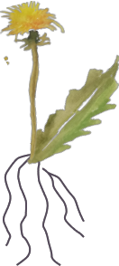

What is alternative medicine?
Finding the root of the problem
Holistic healing focuses on the person as a whole. We dig deep and find the root of the problem rather than treating only the symptoms of an illness a patient has. Instead of looking at the tip of the iceberg, we focus on what’s beneath the surface.
What is alternative medicine?
Holistic approach - human as a whole
We start the process by looking at the entirety of you and your life. All the possible factors need to be accounted for, as any and all variables are important to our detective work. Imagine me as Sherlock Holmes, looking for hidden clues to solve the great murder mystery of your health!
